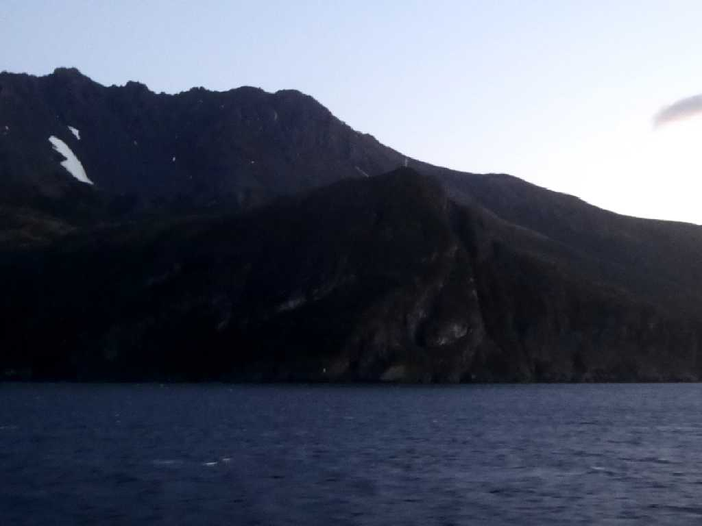
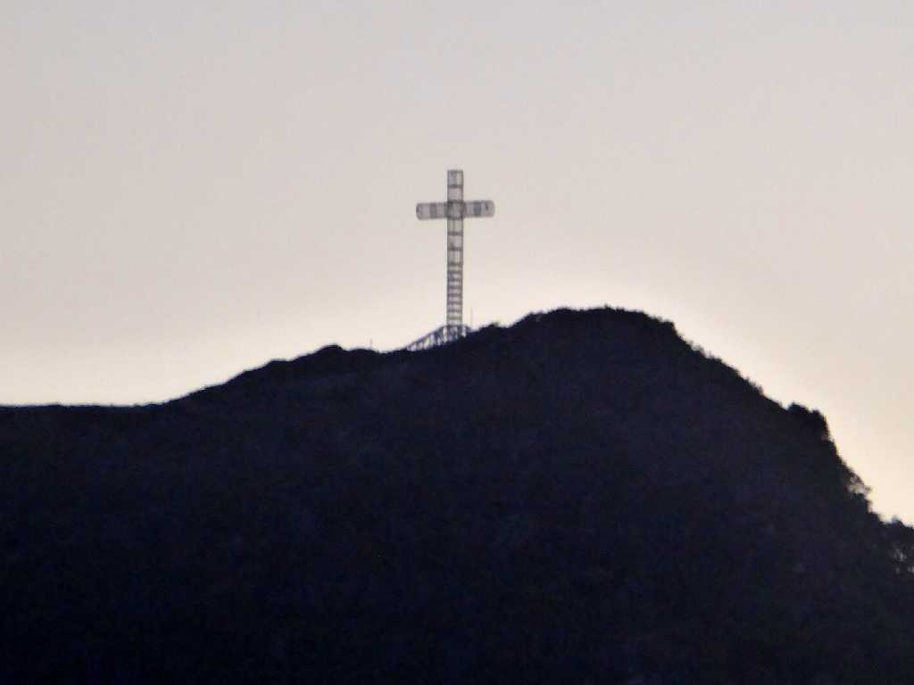
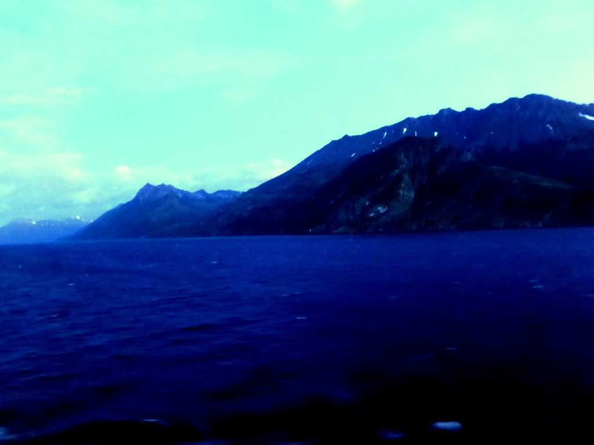
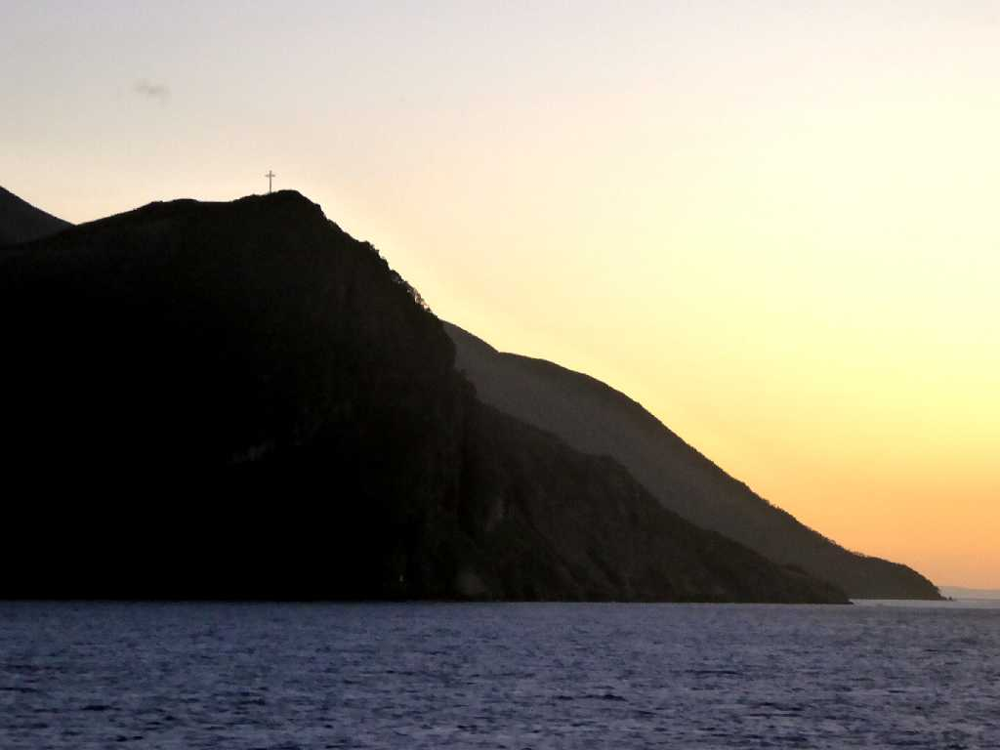
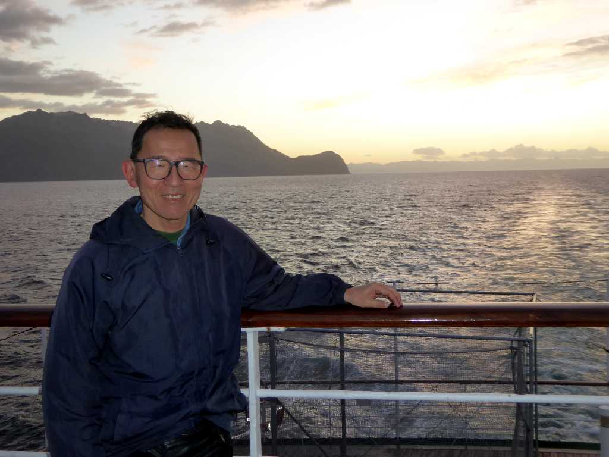

Cabo Froward Estrecho de Magallanes
アメリカ大陸最南端のフロワード岬には海面近くに灯台と岩上部に十字架が観える

Cross Cabo Froward

West side Cabo Froward
２年前に渡ったマゼラン海峡を西へ航行し太平洋に向かう

East side Cabo Froward

February 21 2016 Cabo Froward Estrecho de Magallanes